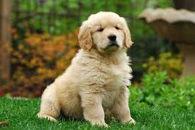

Câinele (Canis lupus familiaris) este una dintre subspeciile lupului cenușiu, fiind un mamifer carnivor din
familia canidelor. Câinele este posibil să fie primul animal domesticit și cel mai folosit pentru muncă,
vânătoare și companie din istoria oamenilor. Cuvântul „câine” denumește masculul speciei, iar termenul
„cățea” este folosit pentru femelă.
Linia prezentă de câini a fost domesticită din lupii cenușii cu aproximativ 15.000 ani în urmă. Deși au fost
găsite în Siberia și Belgia rămășițe de câini domesticiți în urmă cu aproximativ 33.000 de ani, niciuna
dintre aceste specii nu pare să fi supraviețuit după ultima glaciațiune. Testarea ADN-ului sugerează o
scindare evoluționară între câini și lupi în urmă cu circa 100.000 ani, dar nu au fost găsite specimene mai
vechi de 33.000 ani care să fie în mod clar, morfologic, câini domestici.
În diversele cercuri științifice s-a trecut de la considera câinele o specie distinctă, descendentă a
lupului, la o subspecie a lupului. Prin studii genetice s-au adus dovezi certe ce au condus la
reconsiderarea taxonomică a lui „Canis familaris”, astfel din 1993, Smithsonian Institute și American
Society of Mammalogists au reclasificat câinele ca subspecie a lupului. Astfel, după mulți ani de
controverse, câinele a fost numit Canis lupus familiaris.

--Golden Retriever--
Golden Retriever este o rasă de câini extrem de adorabilă, caracterizată prin blana lor strălucitoare de
culoare aurie și ochii căprui expresivi. Acești câini sunt extrem de loiali, afectuoși și iubitori de
jocuri, făcându-i companioni perfecți pentru familiile cu copii sau pentru persoanele care își doresc un
prieten de nădejde. Golden Retrieverii sunt și foarte inteligenți și pot fi dresați cu ușurință pentru a-și
îndeplini diferite sarcini, cum ar fi ajutarea persoanelor cu dizabilități sau efectuarea activităților de
căutare și salvare. În general, acești câini sunt plini de energie, veseli și au un caracter prietenos și
blând, făcându-i iubiti de multa lume.
--Bichon maltez--
Bichon Maltez este o rasă de câini micuți și draguți, cu un blăniță moale și pufosă de culoare albă. Sunt
cunoscuți pentru personalitatea lor jucausă și afectuoasă, fiind niște tovarăși minunați pentru orice
iubitor de animale.
Acești câini sunt extrem de prietenoși și iubitori, fiind mereu bucuroși să fie în preajma stăpânilor lor și
să primească multă atenție și afecțiune. Sunt cunoscuți pentru inteligența lor, fiind ușor de dresat și de
învățat trucuri noi.
De asemenea, Bichon Maltez sunt și foarte jucăuși și plini de energie, iubind să se joace și să se distreze
cu jucăriile lor preferate sau cu alți câini. Cu toate acestea, sunt și niște animale calme și liniștite,
fiind perfecte pentru viața la apartament sau într-un mediu urban.
În general, Bichon Maltez sunt niște câini adorabili și iubitori, care își aduc multă bucurie și fericire în
viața oricui are norocul să îi aibă ca tovarăși.
--Amstaff--
Amstaff-ul, cunoscut și sub numele de American Staffordshire Terrier, este o rasă de câini puternici și
îndrăgostiți, cu o blană strălucitoare de diferite culori. Acești câini sunt foarte devotați și loiali
stăpânului lor, fiind niște parteneri minunați pentru iubitorii de animale.
Una dintre cele mai adorabile caracteristici ale Amstaff-ului este personalitatea lor afectuoasă și
iubitoare. Acești câini iubesc să primească atenție și să fie îmbrățișați, fiind deseori considerați niște
"câini-cârlig". Sunt foarte prietenoși cu oamenii și sunt niște tovarăși minunați pentru copii, deoarece
sunt blânzi și răbdători.
În ciuda dimensiunii lor impresionante, Amstaff-urile sunt niște câini sensibili și empatici, care au nevoie
de multă afecțiune și atenție. Sunt foarte inteligenți și pot fi dresați cu ușurință, fiind adesea utilizați
ca câini de terapie sau în serviciile de salvare.
În general, Amstaff-urile sunt niște câini adorabili și afectuoși, care pot aduce multă bucurie și fericire
în viața oricui le acordă atenția și iubirea de care au nevoie.
Sunt foarte multe rase de câini , drept pentru care nu le pot înșira pe toate , astfel îți pun la
dispoziție un tabel cu rase de câini catalogate după talia lor :
Asociația Red Panda este o organizație non-profit care se ocupă de salvarea și adopția
câinilor fără stăpân din România. Câinii care sunt preluați de către această asociație sunt examinați
medical, tratați, vaccinați și sterilizați înainte de a fi dați spre adopție.
Adoptând un câine de la Asociația Red Panda, nu numai că vei oferi un cămin cald și iubitor unui câine
nevoiaș, dar vei contribui și la diminuarea numărului de câini fără stăpân din România.
Dacă ești interesat să adopți un câine de la Asociația Red Panda, poți să accesezi site-ul lor și să vezi
care dintre câinii disponibili se potrivește cel mai bine cu stilul tău de viață și nevoile tale. De
asemenea, poți să faci o donație sau să te implici ca voluntar în activitățile asociației.